社會洗腦術：掌權者的生育話術
手握大部分的權力和財富但是在人口中佔少數的掌權者，為了順利驅使在人口中佔多數但處於被統治的一方的勞動階層，都會向他們傳達這些觀念：
- 吃得苦中苦，方為人上人
- 吃虧是福
- 沒有經歷過挫折就不算真正活過
- 人生不如意之事十常八九
- 養育下一代才是負責任的表現
- 勤勞能致富
現實揭露：養孩子真的對勞工階級有好處嗎？
甚至他們還會畫大餅給這些韭菜：
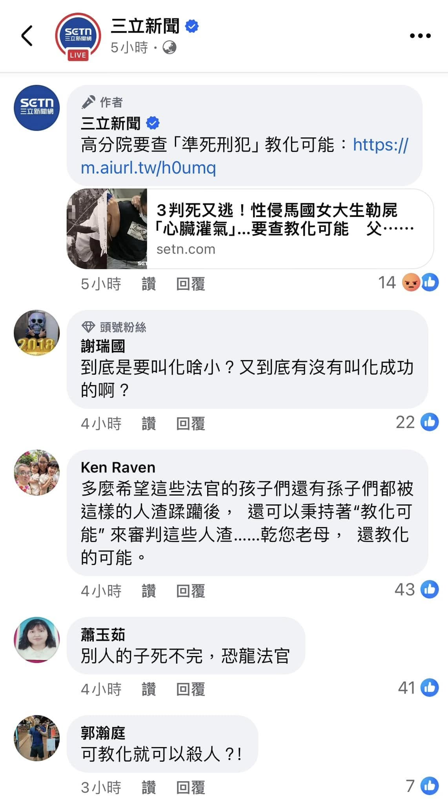 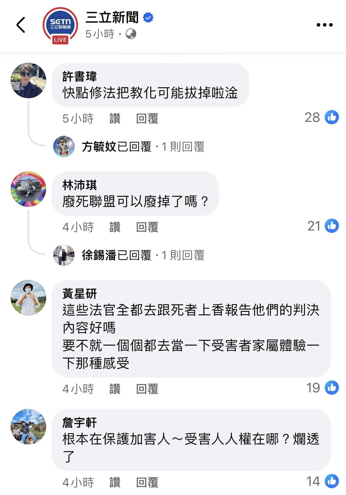 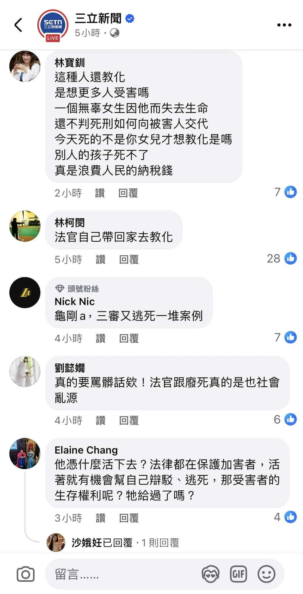


- 你不生孩子的話，你老了誰照顧你、你死的時候誰替你收屍？
- 養小孩的過程很不容易，但是孩子將來會孝順你的。
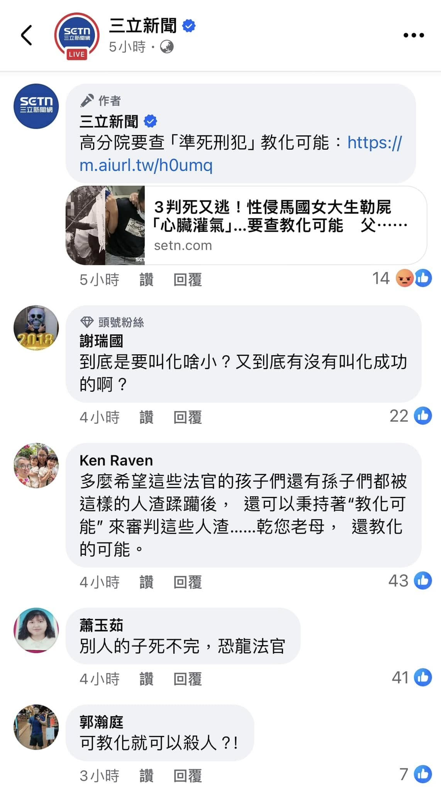 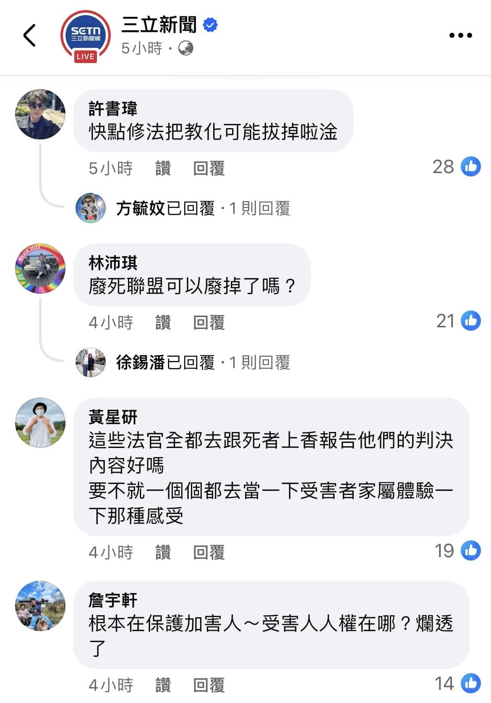 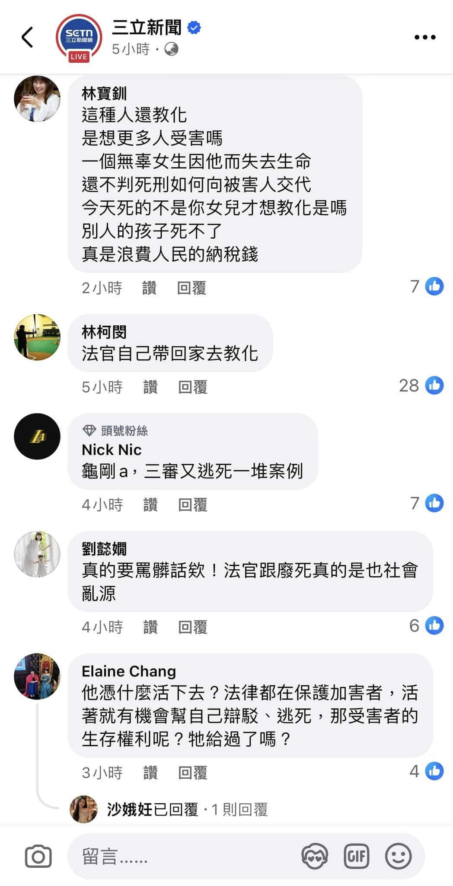
他們的焦慮：少子化讓誰慌了？
家裡有養寵物的人類都深知製造生命後要付出的代價有多大所以會帶寵物去獸醫診所做結紮手術，更何況是人類把同類生出來這件事，所以如果掌權者真的站在勞動階層的處境思考的話，他們就不會這麼瘋狂地催生了，特別是在這個養育小孩的成本十分高昂但是社會安全網十分脆弱的年代。
因此，每當新聞報導少子化帶來多大的負面影響且政客們打著「要顧全大局」的名義呼籲國民生孩子的時候，他們的話翻成白話文就是：
（註：下方這五張插入圖片告訴我們養小孩的成本有多高以及社會安全網有多弱，所以想生孩子的人要有心理準備。我沒有在潑冷水，只是好心提醒一下而已。） 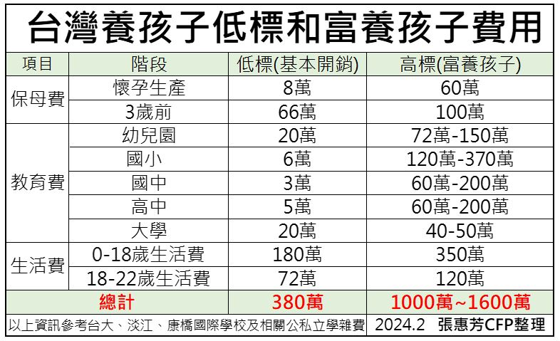


因此，每當新聞報導少子化帶來多大的負面影響且政客們打著「要顧全大局」的名義呼籲國民生孩子的時候，他們的話翻成白話文就是：
- 沒有足夠的奴隸，誰來養活我們？我們的地位和生活品質又要如何維持下去？
- 沒有足夠的兵源，戰爭爆發的時候誰去前線替我們擋砲火？
（註：下方這五張插入圖片告訴我們養小孩的成本有多高以及社會安全網有多弱，所以想生孩子的人要有心理準備。我沒有在潑冷水，只是好心提醒一下而已。） 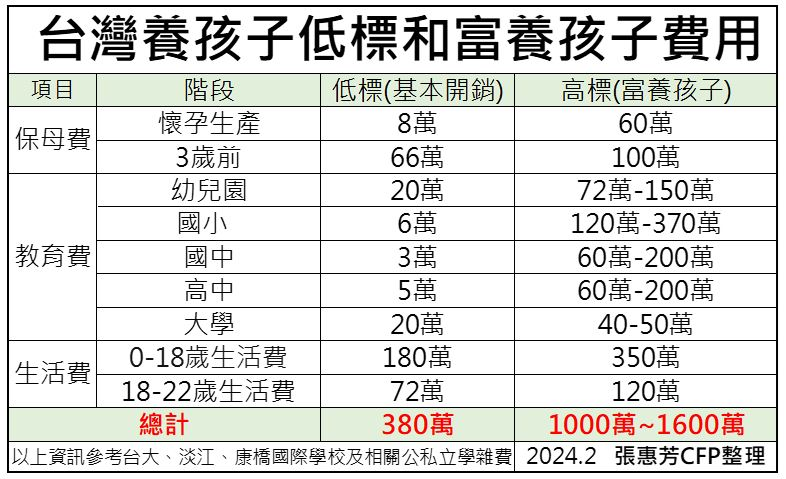
權力與虛偽：蔡英文與尹錫悅的雙標行為
某些政客並不想親自承擔育兒的艱辛和孩子在成長過程中受到傷害的風險，卻更擔心人礦不夠挖而試圖將這些痛苦甩鍋給人民，自己則快活去：
（註：台灣人民對不婚不生卻鼓勵別人生育的蔡英文的多數評價，以及對岸某位博主對不生孩子且用寵物代替孩子卻呼籲國民為國家生小孩的尹錫悅的探討，為下方兩部影片）
台灣和韓國也差不多——新聞一天到晚報導少子化導致將來的勞動力會變多差以及現在多少學校招不到學生等，暗示國人趕緊生孩子以扭轉局面，但問題是當今物價和房價高且養育小孩的開銷大，外加政府又不積極處理校園霸凌、詐騙、行人地獄等困擾國人多年的問題，而且又有不少職場歧視懷孕的員工，在這種情況下生育率會高才怪！
（註：下方三部影片告訴我們韓國和台灣不少地方都對育兒家庭不友善，其中第一部影片的來源為bilibili。）
- 台灣前總統蔡英文呼籲人民多生小孩讓國家更強盛，卻自己一個小孩都沒生
- 南韓總統尹錫悅更是明顯——自己與妻子不生小孩，卻飼養多隻寵物，還要人民為國家拚命生育
（註：台灣人民對不婚不生卻鼓勵別人生育的蔡英文的多數評價，以及對岸某位博主對不生孩子且用寵物代替孩子卻呼籲國民為國家生小孩的尹錫悅的探討，為下方兩部影片）
殘酷但非常真實的現象：大環境對育兒家庭不友善
我相信不只是尹錫悅，不少其他韓國人，尤其是財閥集團和各企業的高層，也一定很擔憂少子化帶來的負面影響，所以身為既得利益者的他們肯定希望普通人多生一點。然而，大部分的人儘管擔心韭菜不夠割，卻對願意繁殖新韭菜的老韭菜和正在發育的新韭菜態度惡劣，這不是很矛盾嗎？你們這些專門以割韭菜為樂的吸血鬼希望韭菜源源不絕長出來，但是又不肯給韭菜好的生長環境和條件，韭菜長得出來才有鬼呢！台灣和韓國也差不多——新聞一天到晚報導少子化導致將來的勞動力會變多差以及現在多少學校招不到學生等，暗示國人趕緊生孩子以扭轉局面，但問題是當今物價和房價高且養育小孩的開銷大，外加政府又不積極處理校園霸凌、詐騙、行人地獄等困擾國人多年的問題，而且又有不少職場歧視懷孕的員工，在這種情況下生育率會高才怪！
（註：下方三部影片告訴我們韓國和台灣不少地方都對育兒家庭不友善，其中第一部影片的來源為bilibili。）
戰爭與權力遊戲：誰上場？誰受害？
讓我分享一下我於前年年底服役的時候學到的東西——新訓期間，我們連長某天上課的時候告訴我們，古代很多帝王很在乎自己能否名留青史給後代留下深刻的印象，而達成這種目標的最快方式就是發動戰爭來擴增領土，所以不排除習近平也會為了收復台灣而這樣做。換句話說，很多統治者在乎的是自己的面子和名聲，至於這些為了他的面子而上戰場的士兵的恐懼和無奈以及這些士兵的家人對孩子能否平安歸來的擔憂，他根本不在乎，反正他們的名字和長相又不會出現在將來的歷史課本和將來根據歷史改編而成的電玩、影視劇裡，除非他們的戰鬥力強大到能讓他們和關羽、張飛一樣出名。畢竟，他只要躲在安全的地方觀戰就好，而犧牲的都是與他無關的士兵，這讓我意識到人都是自私的，尤其是在利益面前。同樣的道理，要是台灣的現任領導人為了實現他自己的理想（也就是台灣獨立）而與習近平對抗甚至不惜發動戰爭，死的可能就是無辜的人民，而他很可能甚麼事都沒有，所以站在務實的角度思考的人就會覺得台獨是非常不實際的。
（註：下方的影片就是趙少康解釋他不贊成台獨的苦衷）
所以，不少人都說掌權的人很自私、完全不會顧慮到普通人養小孩的困難，尤其是歷史上那些發動戰爭就只是為自己的面子問題的國家領導人，那我反問一下：「當你在洛聖都這個虛構的城市裡以麥可、崔佛、富蘭克林等人的身份大殺特殺的時候，你只想體驗犯罪的感覺，這時候你還會在乎被你殺害的NPC的感受嗎？」你根本不會嘛，因為他們被你殺害後不久會被系統回收並在某處搭配不同的髮型、膚色、五官並重新生成，但是更諷刺的是，一旦系統當機導致麥可、崔佛、富蘭克林他們三人殺死的NPC在被系統回收後無法重新生成，玩家就會崩潰，因為遊戲無法進行下去。掌權的人就像洛聖都裡的那三位主角，而普通人就像被他們消耗的NPC，所以他們平日不會在乎普通民眾的處境，但如果普通民眾不再生育，他們就會感到恐慌。所以，你憑甚麼奢望他們能對我們的痛苦感同身受呢？
 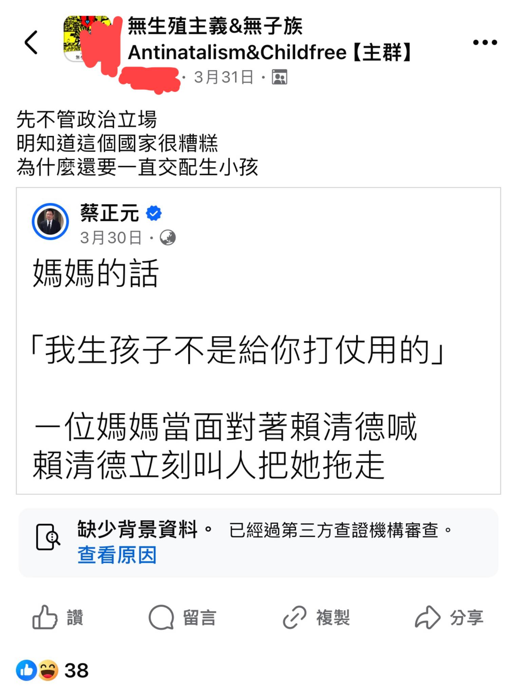
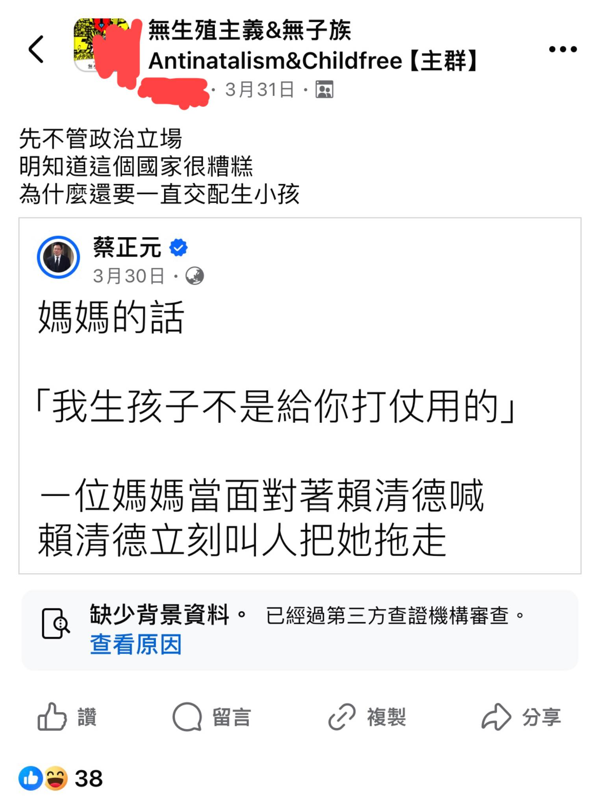
（註：下方的影片就是趙少康解釋他不贊成台獨的苦衷）
所以，不少人都說掌權的人很自私、完全不會顧慮到普通人養小孩的困難，尤其是歷史上那些發動戰爭就只是為自己的面子問題的國家領導人，那我反問一下：「當你在洛聖都這個虛構的城市裡以麥可、崔佛、富蘭克林等人的身份大殺特殺的時候，你只想體驗犯罪的感覺，這時候你還會在乎被你殺害的NPC的感受嗎？」你根本不會嘛，因為他們被你殺害後不久會被系統回收並在某處搭配不同的髮型、膚色、五官並重新生成，但是更諷刺的是，一旦系統當機導致麥可、崔佛、富蘭克林他們三人殺死的NPC在被系統回收後無法重新生成，玩家就會崩潰，因為遊戲無法進行下去。掌權的人就像洛聖都裡的那三位主角，而普通人就像被他們消耗的NPC，所以他們平日不會在乎普通民眾的處境，但如果普通民眾不再生育，他們就會感到恐慌。所以，你憑甚麼奢望他們能對我們的痛苦感同身受呢？
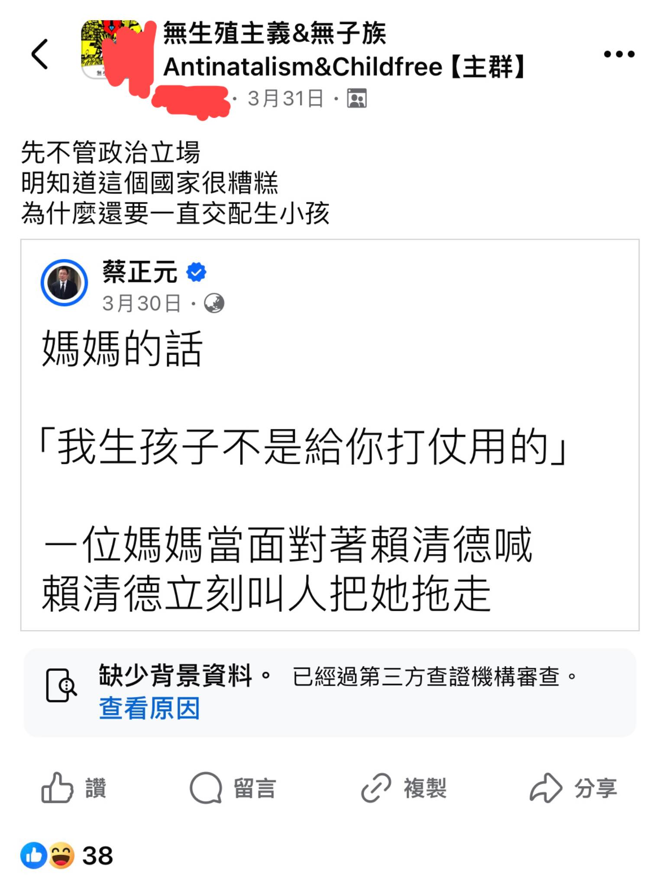
總結：為什麼我不生孩子？因為我看清了這一切
我不生，不是因為我怨天尤人、怕吃苦、不願負責任。相反的，正因為我看清了整個系統的運作方式，我才選擇不再讓下一個生命被推進這場沒有選擇的戰場。
這個社會一直以來都不是為普通人設計的。你可以努力，但努力不代表你會成功；你可以付出，但付出不保證你會被善待。掌權的人畫大餅要你生育，卻從未真正想過你的孩子將來會面對什麼樣的未來。他們不會為你的小孩負責，甚至連你都得不到保障。
我選擇不生，是因為我尊重生命，不願意把一個無辜的靈魂推入一個滿是矛盾、壓榨與風險的世界。不是因為我冷漠，而是因為我清醒。
當我看到這社會對待孩子的方式、對待家庭的方式、對待基層人民的方式，我只想問一句：這樣的環境，真的值得再多創造一條生命進來承受嗎？
我寧可結束這一輪消耗與收割的循環，也不願成為那個幫助體制源源不絕輸出人礦的幫兇。
所以，如果你問我：「為什麼不生？」 我會回你：「我看透了這一切——而我選擇拒絕。」
這個社會一直以來都不是為普通人設計的。你可以努力，但努力不代表你會成功；你可以付出，但付出不保證你會被善待。掌權的人畫大餅要你生育，卻從未真正想過你的孩子將來會面對什麼樣的未來。他們不會為你的小孩負責，甚至連你都得不到保障。
我選擇不生，是因為我尊重生命，不願意把一個無辜的靈魂推入一個滿是矛盾、壓榨與風險的世界。不是因為我冷漠，而是因為我清醒。
當我看到這社會對待孩子的方式、對待家庭的方式、對待基層人民的方式，我只想問一句：這樣的環境，真的值得再多創造一條生命進來承受嗎？
我寧可結束這一輪消耗與收割的循環，也不願成為那個幫助體制源源不絕輸出人礦的幫兇。
所以，如果你問我：「為什麼不生？」 我會回你：「我看透了這一切——而我選擇拒絕。」
註：
| 多數網友評價蔡英文的影片的背景音樂來源 | 趙少康發表他不贊成台獨的影片的背景音樂來源 |
|---|---|
| 戰鬥-通往勝利（鎧甲勇士光影傳奇插曲） |
| 遭生技公司解雇的員工申訴公司的影片的背景音樂來源 | 在醫院遭到歧視的護理師指控護理長的影片的背景音樂來源 |
|---|---|